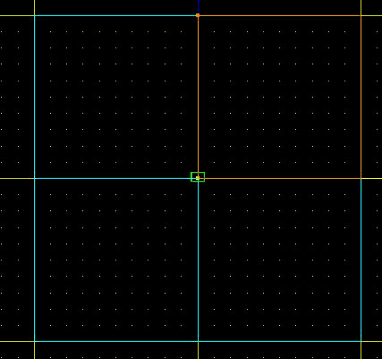
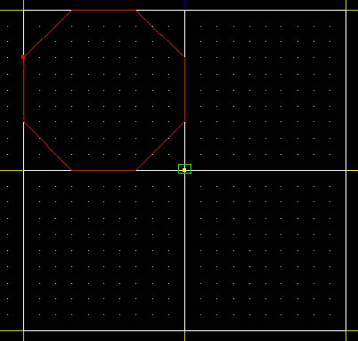
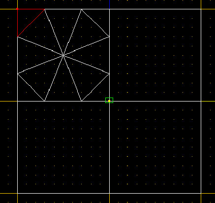
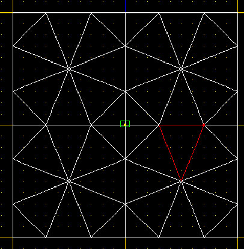
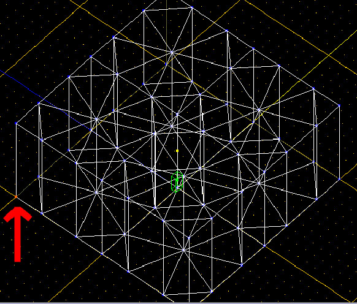
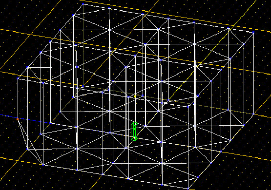
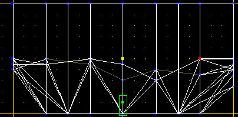
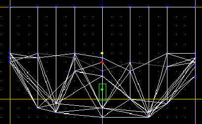
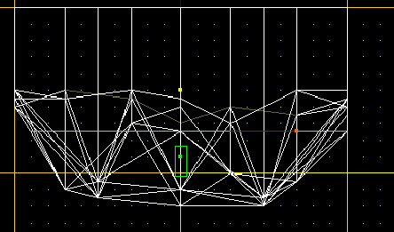
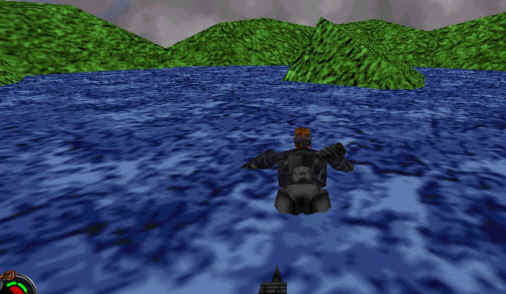

Natural
Terrain Using Triangular Sectors
By
Darth J
This tutorial is written for any editor that is familiar with the cleave
tool, and dragging vertices without getting non-convex or non-planar surfaces.
This is a more advanced tutorial, so if you're new to Jed, I recommend
starting with something easier. For
this tutorial, we will be making a very small area with small hills and a pond.
Step
1: CLEAVING
First, cleave the default sector into 4 equal sections:

Now, select 1 of the 4 sectors, and cleave the corners into separate sectors

Now, connect each vertice of the octagonal sector to the center.

Make the remaining 3 sectors identical to the first one.

In the above screenshot, you'll notice that all of the sectors are triangular.
This prevents non-convex sectors and surfaces when dragging the vertices. If you're not a fan of cleaving, then you're in luck, because
that's pretty much all you'll need to do.
Step
2: DRAGGING
Now we move on to a more complicated stage.
You will have to drag the bottom vertices UP, and only UP.
If you drag them side to side, you will end up with a handful of errors.

Drag this corner to a length that pleases you, I recommend about halfway to the top of the sector.

Repeat
this step for every vertex along the outside of the level.
Be sure to drag at random, otherwise it won't look like random terrain.
Your level should now look similar to this.

Now
to make the inner sections random, you may drag any of the remaining vertices UP
or DOWN only. The inner section
will be the area that will make up our pond, so if you want some small islands,
you should drag 2 or 3 vertices (that are linked) up about the same length as
the outer vertices. I also
recommend dragging the vertices down more as you get closer to the center.
Your level should now look similar this.

Congrats,
we're done with the vertex dragging. Now,
texture your level and move on to the next step.
Step
3: WATER

Now,
multi-select the adjoins where the surface of the water is, and set the GEO
value to 4, rendering the adjoin visible. Texture
the surface of the water with a water texture of your choice.
Finally, select all of the sectors underneath the surface line, and flag them as "underwater". You have no made an error-free, natural looking level. Now, of course this doesn't look very good by itself, but now you know the basics of natural terrain and natural water.
